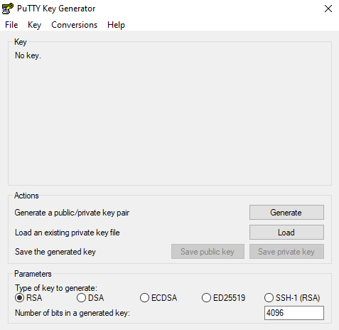
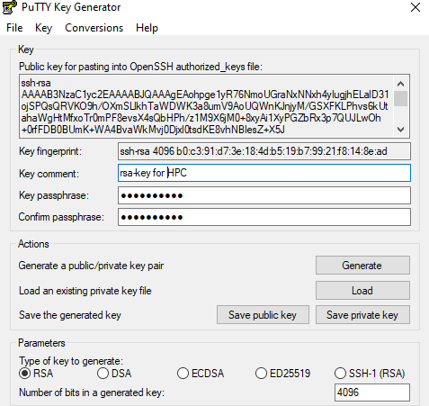
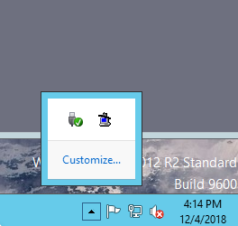
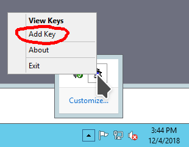
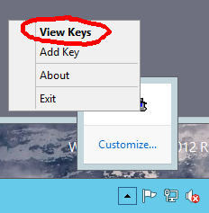
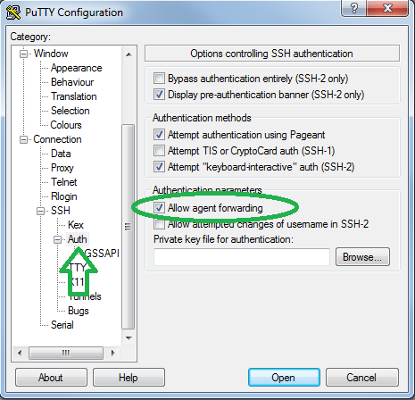
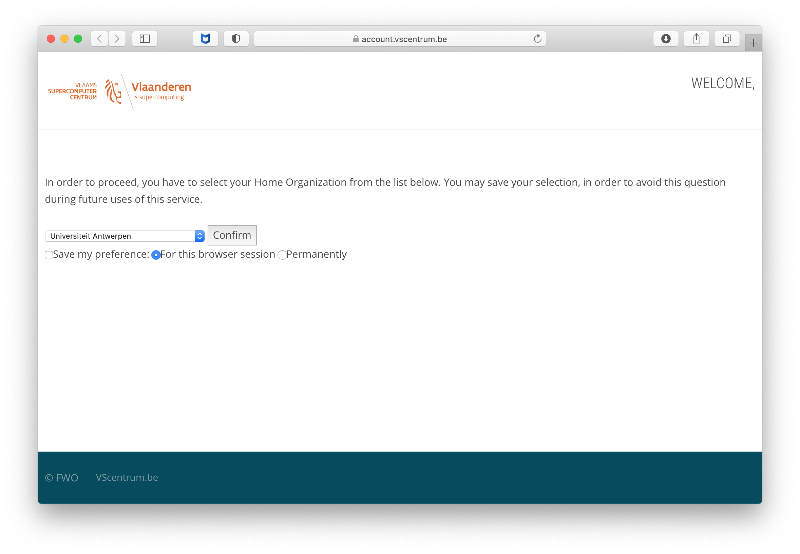

Getting an HPC Account#
Getting ready to request an account#
All users of AUGent can request an account on the HPC, which is part of the Flemish Supercomputing Centre (VSC).
See HPC policies for more information on who is entitled to an account.
The VSC, abbreviation of Flemish Supercomputer Centre, is a virtual supercomputer centre. It is a partnership between the five Flemish associations: the Association KU Leuven, Ghent University Association, Brussels University Association, Antwerp University Association and the University Colleges-Limburg. The VSC is funded by the Flemish Government.
There are two methods for connecting to HPC-UGent infrastructure:
- Using a terminal to connect via SSH.
- Using the web portal
The web portal offers a convenient way to upload files and gain shell access to the HPC-UGent infrastructure from a standard web browser (no software installation or configuration required).
If you would like use a terminal with SSH as this gives you more flexibility continue reading. However if you prefer to use the web portal, you can skip ahead to the following section: Applying for the account. Once you have successfully obtained an account, you can then delve into the details of utilizing the HPC-UGent web portal by reading Using the HPC-UGent web portal.
The HPC-UGent infrastructure clusters use public/private key pairs for user authentication (rather than passwords). Technically, the private key is stored on your local computer and always stays there; the public key is stored on the HPC. Access to the HPC is granted to anyone who can prove to have access to the corresponding private key on his local computer.
How do SSH keys work?#
-
an SSH public/private key pair can be seen as a lock and a key
-
the SSH public key is equivalent with a lock: you give it to the VSC and they put it on the door that gives access to your account.
-
the SSH private key is like a physical key: you don't hand it out to other people.
-
anyone who has the key (and the optional password) can unlock the door and log in to the account.
-
the door to your VSC account is special: it can have multiple locks (SSH public keys) attached to it, and you only need to open one lock with the corresponding key (SSH private key) to open the door (log in to the account).
Since all VSC clusters use Linux as their main operating system, you will need to get acquainted with using the command-line interface and using the terminal (see tutorial). A typical Windows environment does not come with pre-installed software to connect and run command-line executables on a HPC. Some tools need to be installed on your Windows machine first, before we can start the actual work.
Get PuTTY: A free telnet/SSH client#
We recommend to use the PuTTY tools package, which is freely available.
You do not need to install PuTTY, you can download the PuTTY and PuTTYgen executable and run it. This can be useful in situations where you do not have the required permissions to install software on the computer you are using. Alternatively, an installation package is also available.
You can download PuTTY from the official address:
https://www.chiark.greenend.org.uk/~sgtatham/putty/latest.html. You
probably want the 64-bits version. If you can install software on your
computer, you can use the "Package files", if not, you can download and
use putty.exe and puttygen.exe in the "Alternative binary files"
section.
The PuTTY package consists of several components, but we'll only use two:
-
PuTTY: the Telnet and SSH client itself (to login, see Open a terminal)
-
PuTTYgen: an RSA and DSA key generation utility (to generate a key pair, see Generate a public/private key pair)
Generating a public/private key pair#
Before requesting a VSC account, you need to generate a pair of ssh keys. You need 2 keys, a public and a private key. You can visualise the public key as a lock to which only you have the key (your private key). You can send a copy of your lock to anyone without any problems, because only you can open it, as long as you keep your private key secure. To generate a public/private key pair, you can use the PuTTYgen key generator.
Start PuTTYgen.exe it and follow these steps:
-
In Parameters (at the bottom of the window), choose "RSA" and set the number of bits in the key to 4096.

-
Click on Generate. To generate the key, you must move the mouse cursor over the PuTTYgen window (this generates some random data that PuTTYgen uses to generate the key pair). Once the key pair is generated, your public key is shown in the field Public key for pasting into OpenSSH authorized_keys file.
-
Next, it is advised to fill in the Key comment field to make it easier identifiable afterwards.
-
Next, you should specify a passphrase in the Key passphrase field and retype it in the Confirm passphrase field. Remember, the passphrase protects the private key against unauthorised use, so it is best to choose one that is not too easy to guess but that you can still remember. Using a passphrase is not required, but we recommend you to use a good passphrase unless you are certain that your computer's hard disk is encrypted with a decent password. (If you are not sure your disk is encrypted, it probably isn't.)

-
Save both the public and private keys in a folder on your personal computer (We recommend to create and put them in the folder "C:\Users\%USERNAME%\AppData\Local\PuTTY\.ssh") with the buttons Save public key and Save private key. We recommend using the name "id_rsa.pub" for the public key, and "id_rsa.ppk" for the private key.
If you use another program to generate a key pair, please remember that they need to be in the OpenSSH format to access the HPC clusters.
Using an SSH agent (optional)#
It is possible to setup a SSH agent in Windows. This is an optional configuration to help you to keep all your SSH keys (if you have several) stored in the same key ring to avoid to type the SSH key password each time. The SSH agent is also necessary to enable SSH hops with key forwarding from Windows.
Pageant is the SSH authentication agent used in windows. This agent should be available from the PuTTY installation package https://www.chiark.greenend.org.uk/~sgtatham/putty/latest.html or as stand alone binary package.
After the installation just start the Pageant application in Windows, this will start the agent in background. The agent icon will be visible from the Windows panel.

At this point the agent does not contain any private key. You should include the private key(s) generated in the previous section Generating a public/private key pair.
-
Click on Add key

-
Select the private key file generated in Generating a public/private key pair ("id_rsa.ppk" by default).
-
Enter the same SSH key password used to generate the key. After this step the new key will be included in Pageant to manage the SSH connections.
-
You can see the SSH key(s) available in the key ring just clicking on View Keys.

-
You can change PuTTY setup to use the SSH agent. Open PuTTY and check Connection > SSH > Auth > Allow agent forwarding.

Now you can connect to the login nodes as usual. The SSH agent will know which SSH key should be used and you do not have to type the SSH passwords each time, this task is done by Pageant agent automatically.
It is also possible to use WinSCP with Pageant, see https://winscp.net/eng/docs/ui_pageant for more details.
Applying for the account#
Visit https://account.vscentrum.be/
You will be redirected to our WAYF (Where Are You From) service where you have to select your "Home Organisation".

Select "UGent" in the dropdown box and optionally select "Save my preference" and "permanently".
Click Confirm
You will now be taken to the authentication page of your institute.
You will now have to log in with CAS using your UGent account.
You either have a login name of maximum 8 characters, or a (non-UGent) email address if you are an external user. In case of problems with your UGent password, please visit: https://password.ugent.be/. After logging in, you may be requested to share your information. Click "Yes, continue".
After you log in using your UGent login and password, you will be asked to upload the file that contains your public key, i.e., the file "id_rsa.pub" which you have generated earlier. Make sure that your public key is actually accepted for upload, because if it is in a wrong format, wrong type or too short, then it will be refused.
This file should have been stored in the directory "C:\Users\%USERNAME%\AppData\Local\PuTTY\.ssh"
After you have uploaded your public key you will receive an e-mail with a link to confirm your e-mail address. After confirming your e-mail address the VSC staff will review and if applicable approve your account.
Welcome e-mail#
Within one day, you should receive a Welcome e-mail with your VSC account details.
Dear (Username),
Your VSC-account has been approved by an administrator.
Your vsc-username is vsc40000
Your account should be fully active within one hour.
To check or update your account information please visit
https://account.vscentrum.be/
For further info please visit https://www.vscentrum.be/user-portal
Kind regards,
-- The VSC administrators
Now, you can start using the HPC. You can always look up your VSC id later by visiting https://account.vscentrum.be.
Adding multiple SSH public keys (optional)#
In case you are connecting from different computers to the login nodes, it is advised to use separate SSH public keys to do so. You should follow these steps.
-
Create a new public/private SSH key pair from Putty. Repeat the process described in section Generate a public/private key pair.
-
Upload the new SSH public key using the Add public key section. Make sure that your public key is actually saved, because a public key will be refused if it is too short, wrong type, or in a wrong format.
-
(optional) If you lost your key, you can delete the old key on the same page. You should keep at least one valid public SSH key in your account.
-
Take into account that it will take some time before the new SSH public key is active in your account on the system; waiting for 15-30 minutes should be sufficient.
Computation Workflow on the HPC#
A typical Computation workflow will be:
-
Connect to the HPC
-
Transfer your files to the HPC
-
Compile your code and test it
-
Create a job script
-
Submit your job
-
Wait while
-
your job gets into the queue
-
your job gets executed
-
your job finishes
-
-
Move your results
We'll take you through the different tasks one by one in the following chapters.